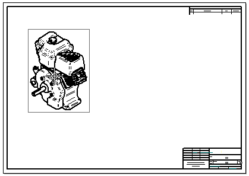

Creating drawing views from a model dragged onto a sheet
Another way to create drawing views is to drag a model onto a drawing sheet. When
you do this, the View Wizard command  runs automatically to create the drawing views. This produces a standard drawing
view based on the type of model.
runs automatically to create the drawing views. This produces a standard drawing
view based on the type of model.
The view orientation of the first view placed is shown in the following table.
|
This model type |
Produces this view orientation for the first view |
|
Part |
Front view |
|
Sheet metal (as modeled) |
Front view |
|
Sheet metal (flattened) |
Top view |
|
Assembly |
Isometric view |
|
Weldment (.pwd) |
Isometric |
The first view placed in an assembly model is an isometric view. After placing the first view, you can create additional views from the primary view by moving the cursor and clicking to place each one.

This workflow is controlled by the option, Use Drawing View Wizard when models are dragged onto the drawing sheet, which is located on the Drawing View Wizard tab in the Solid Edge Options dialog box.
Selecting this option is equivalent to pressing Shift while you drag a model onto the sheet.
When this option is deselected and you drag a model onto the sheet, a fixed set of drawing view orientations is placed on the sheet all at once.
If you drag a part or sheet metal model onto the sheet, a standard set of views is generated and placed.

How do I
Create drawing views of a part with the View WizardChange drawing view orientation
Look up more details
View Wizard commandView Wizard command bar
Drawing View Selection command bar
Quick links
Drawing production workflowsSheet scale and drawing view scale
Add custom drawing view scales to Solid Edge
Modifying captions
Drawing view properties
Drawing View Properties dialog box
Drawing view manipulation
Drawing View Wizard tab (Solid Edge Options dialog box)